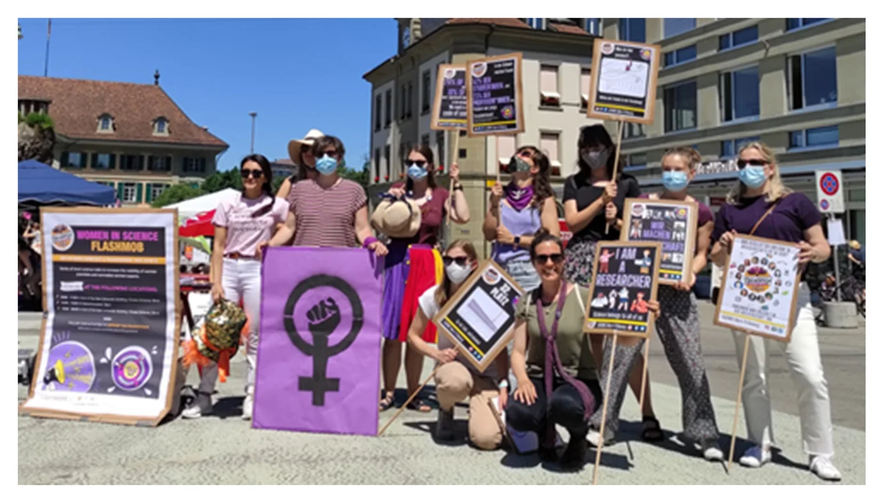
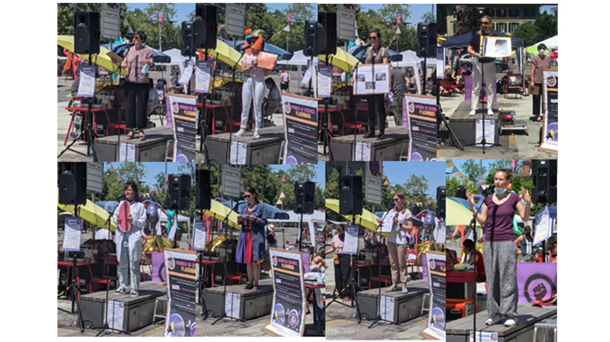
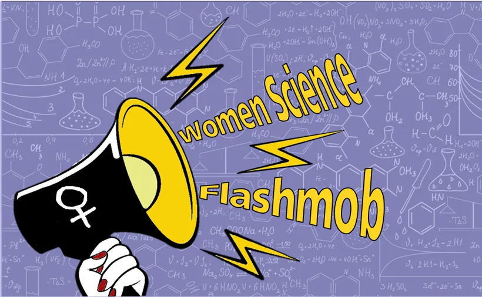

Event report
500WS at the Frauenstreik Women in Science Flashmob
On June 14th, we decided to join the Frauenstreik by organizing a Women in Science flashmob.
This consisted of a series of short science talks given by 20 female scientists to increase the visibility of women scientists and normalize women experts as well as to make a point about the gender inequalities that exist in academia.
This performance was followed by several hundred women and was covered by several media outlets that you can read here, here, here and here. Among them, it is worth mentioning the appearance in Der Bund and the interview given by Dr. Claudia Kasper and Lucia Rotheray to the journal-b newspaper.


